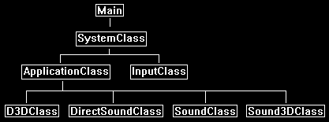

This tutorial will cover how to implement 3D sound using Direct Sound in DirectX 11 with C++.
The code in this tutorial is based on the Direct Sound tutorial 55.
We will modify the original code so that sounds are now 3D instead of 2D.
The first concept with 3D sound is that all sounds now have a 3D position in the world.
The x, y, and z position of the sound are the same as the left-handed coordinate system DirectX uses for graphics.
This makes it very easier to create "sound bubbles" around 3D models.
For example, you might have a river located at a specific position in the world.
You could then create a bounding sphere around the river location and any one who enters that sphere then hears the sound of the river.
And the closer they get to the center of the sound in the sound bubble the louder the volume is of that sound.
The next important concept when implementing 3D sound using Direct Sound is the use of a listener.
The listener is an interface that represents where the person that is listening is positioned in the 3D world.
Direct Sound uses the listener's distance from the position of 3D sounds that are playing to make proper calculations so the sound playing is correct for 3D audio.
There can only be a single listener ever.
Most 3D applications will set the listener position to be the same as the first-person camera view location.
Then as the camera moves the listener position is updated and Direct Sound automatically takes care of mixing the 3D audio sounds using the updated listener position.
The audio format for 3D sounds can be anything just like 2D sounds, all you need to do is write the importer for the sound format.
However, there is one restriction for 3D sounds which is that they must be single channel (mono) only.
Dual channel (stereo) sounds will cause Direct Sound to send back errors.
In this tutorial we will use the .wav sound format with sound files recorded at 44100 KHz, 16bit, and mono.
The final concept is the use of the IDirectSound3DBuffer8 interface.
We still load sounds into a secondary sound buffer of type IDirectSoundBuffer8 except in the buffer description we bitwise the DSBCAPS_CTRL3D parameter to let Direct Sound know that we will be manipulating the sound in a 3D manner.
Then once the sound is loaded into the secondary sound buffer, we then get a IDirectSound3DBuffer8 interface to that sound buffer which then lets us control the 3D parameters.
The IDirectSoundBuffer8 is still used for controlling the regular aspects of the sound such as volume but to modify 3D aspects such as 3D position we use the IDirectSound3DBuffer8 interface.
Just think of it as two different purpose controllers to the same sound buffer.
Framework
In the framework we have added a new class called Sound3DClass.

Sound3dclass.h
The Sound3DClass is a direct copy of the SoundClass from the last tutorial.
It has been modified with a couple of extra lines of code to support 3D audio loading and playback.
////////////////////////////////////////////////////////////////////////////////
// Filename: sound3dclass.h
////////////////////////////////////////////////////////////////////////////////
#ifndef _SOUND3DCLASS_H_
#define _SOUND3DCLASS_H_
///////////////////////
// MY CLASS INCLUDES //
///////////////////////
#include "directsoundclass.h"
////////////////////////////////////////////////////////////////////////////////
// Class name: Sound3DClass
////////////////////////////////////////////////////////////////////////////////
class Sound3DClass
{
private:
struct RiffWaveHeaderType
{
char chunkId[4];
unsigned long chunkSize;
char format[4];
};
struct SubChunkHeaderType
{
char subChunkId[4];
unsigned long subChunkSize;
};
struct FmtType
{
unsigned short audioFormat;
unsigned short numChannels;
unsigned long sampleRate;
unsigned long bytesPerSecond;
unsigned short blockAlign;
unsigned short bitsPerSample;
};
public:
Sound3DClass();
Sound3DClass(const Sound3DClass&);
~Sound3DClass();
bool LoadTrack(IDirectSound8*, char*, long);
void ReleaseTrack();
bool PlayTrack();
bool StopTrack();
We have a new function to update the position of the 3D sound.
bool Update3DPosition(float, float, float);
private:
The load function now loads mono files instead of stereo ones.
bool LoadMonoWaveFile(IDirectSound8*, char*, long);
void ReleaseWaveFile();
private:
IDirectSoundBuffer8* m_secondaryBuffer;
We have also added a 3D buffer interface for 3D sound manipulation.
IDirectSound3DBuffer8* m_secondary3DBuffer;
};
#endif
Sound3dclass.cpp
///////////////////////////////////////////////////////////////////////////////
// Filename: sound3dclass.cpp
///////////////////////////////////////////////////////////////////////////////
#include "sound3dclass.h"
Sound3DClass::Sound3DClass()
{
m_secondaryBuffer = 0;
Initialize the new 3D secondary sound buffer interface to null in the class constructor.
m_secondary3DBuffer = 0;
}
Sound3DClass::Sound3DClass(const Sound3DClass& other)
{
}
Sound3DClass::~Sound3DClass()
{
}
The LoadTrack function now calls the new LoadMonoWaveFile function.
bool Sound3DClass::LoadTrack(IDirectSound8* DirectSound, char* filename, long volume)
{
bool result;
// Load the wave file for the sound.
result = LoadMonoWaveFile(DirectSound, filename, volume);
if(!result)
{
return false;
}
return true;
}
void Sound3DClass::ReleaseTrack()
{
// Release the wave file buffers.
ReleaseWaveFile();
return;
}
bool Sound3DClass::PlayTrack()
{
HRESULT result;
// Set position at the beginning of the sound buffer.
result = m_secondaryBuffer->SetCurrentPosition(0);
if(FAILED(result))
{
return false;
}
// If looping is on then play the contents of the secondary sound buffer in a loop, otherwise just play it once.
result = m_secondaryBuffer->Play(0, 0, 0);
if(FAILED(result))
{
return false;
}
return true;
}
bool Sound3DClass::StopTrack()
{
HRESULT result;
// Stop the sound from playing.
result = m_secondaryBuffer->Stop();
if(FAILED(result))
{
return false;
}
return true;
}
The LoadMonoWaveFile function works almost identically to the LoadStereoWaveFile function from the last tutorial.
There are just some minor changes since the audio file is going to be mono instead of stereo.
bool Sound3DClass::LoadMonoWaveFile(IDirectSound8* DirectSound, char* filename, long volume)
{
FILE* filePtr;
RiffWaveHeaderType riffWaveFileHeader;
SubChunkHeaderType subChunkHeader;
FmtType fmtData;
WAVEFORMATEX waveFormat;
DSBUFFERDESC bufferDesc;
HRESULT result;
IDirectSoundBuffer* tempBuffer;
unsigned char *waveData, *bufferPtr;
unsigned long long count;
unsigned long dataSize, bufferSize;
long seekSize;
int error;
bool foundFormat, foundData;
// Open the wave file for reading in binary.
error = fopen_s(&filePtr, filename, "rb");
if(error != 0)
{
return false;
}
// Read in the riff wave file header.
count = fread(&riffWaveFileHeader, sizeof(riffWaveFileHeader), 1, filePtr);
if(count != 1)
{
return false;
}
// Check that the chunk ID is the RIFF format.
if((riffWaveFileHeader.chunkId[0] != 'R') || (riffWaveFileHeader.chunkId[1] != 'I') || (riffWaveFileHeader.chunkId[2] != 'F') || (riffWaveFileHeader.chunkId[3] != 'F'))
{
return false;
}
// Check that the file format is the WAVE format.
if((riffWaveFileHeader.format[0] != 'W') || (riffWaveFileHeader.format[1] != 'A') || (riffWaveFileHeader.format[2] != 'V') || (riffWaveFileHeader.format[3] != 'E'))
{
return false;
}
// Read in the sub chunk headers until you find the format chunk.
foundFormat = false;
while(foundFormat == false)
{
// Read in the sub chunk header.
count = fread(&subChunkHeader, sizeof(subChunkHeader), 1, filePtr);
if(count != 1)
{
return false;
}
// Determine if it is the fmt header. If not then move to the end of the chunk and read in the next one.
if((subChunkHeader.subChunkId[0] == 'f') && (subChunkHeader.subChunkId[1] == 'm') && (subChunkHeader.subChunkId[2] == 't') && (subChunkHeader.subChunkId[3] == ' '))
{
foundFormat = true;
}
else
{
fseek(filePtr, subChunkHeader.subChunkSize, SEEK_CUR);
}
}
// Read in the format data.
count = fread(&fmtData, sizeof(fmtData), 1, filePtr);
if(count != 1)
{
return false;
}
// Check that the audio format is WAVE_FORMAT_PCM.
if(fmtData.audioFormat != WAVE_FORMAT_PCM)
{
return false;
}
The first change is that we need to confirm the file is recorded in a mono format.
3D sound files must be recorded as single channel (mono).
// Check that the wave file was recorded in mono format.
if(fmtData.numChannels != 1)
{
return false;
}
// Check that the wave file was recorded at a sample rate of 44.1 KHz.
if(fmtData.sampleRate != 44100)
{
return false;
}
// Ensure that the wave file was recorded in 16 bit format.
if(fmtData.bitsPerSample != 16)
{
return false;
}
// Seek up to the next sub chunk.
seekSize = subChunkHeader.subChunkSize - 16;
fseek(filePtr, seekSize, SEEK_CUR);
// Read in the sub chunk headers until you find the data chunk.
foundData = false;
while(foundData == false)
{
// Read in the sub chunk header.
count = fread(&subChunkHeader, sizeof(subChunkHeader), 1, filePtr);
if(count != 1)
{
return false;
}
// Determine if it is the data header. If not then move to the end of the chunk and read in the next one.
if((subChunkHeader.subChunkId[0] == 'd') && (subChunkHeader.subChunkId[1] == 'a') && (subChunkHeader.subChunkId[2] == 't') && (subChunkHeader.subChunkId[3] == 'a'))
{
foundData = true;
}
else
{
fseek(filePtr, subChunkHeader.subChunkSize, SEEK_CUR);
}
}
// Store the size of the data chunk.
dataSize = subChunkHeader.subChunkSize;
// Set the wave format of secondary buffer that this wave file will be loaded onto.
waveFormat.wFormatTag = WAVE_FORMAT_PCM;
waveFormat.nSamplesPerSec = fmtData.sampleRate;
waveFormat.wBitsPerSample = fmtData.bitsPerSample;
waveFormat.nChannels = fmtData.numChannels;
waveFormat.nBlockAlign = (waveFormat.wBitsPerSample / 8) * waveFormat.nChannels;
waveFormat.nAvgBytesPerSec = waveFormat.nSamplesPerSec * waveFormat.nBlockAlign;
waveFormat.cbSize = 0;
The buffer will require 3D capabilities.
We use the DSBCAPS_CTRL3D bitwised with the other options for the dwFlags parameter.
// Set the buffer description of the secondary sound buffer that the wave file will be loaded onto.
bufferDesc.dwSize = sizeof(DSBUFFERDESC);
bufferDesc.dwBufferBytes = dataSize;
bufferDesc.dwReserved = 0;
bufferDesc.lpwfxFormat = &waveFormat;
bufferDesc.guid3DAlgorithm = GUID_NULL;
bufferDesc.dwFlags = DSBCAPS_CTRLVOLUME | DSBCAPS_CTRL3D; // Mono 3D track.
// Create a temporary sound buffer with the specific buffer settings.
result = DirectSound->CreateSoundBuffer(&bufferDesc, &tempBuffer, NULL);
if(FAILED(result))
{
return false;
}
// Test the buffer format against the direct sound 8 interface and create the secondary buffer.
result = tempBuffer->QueryInterface(IID_IDirectSoundBuffer8, (void**)&m_secondaryBuffer);
if(FAILED(result))
{
return false;
}
// Release the temporary buffer.
tempBuffer->Release();
tempBuffer = 0;
// Create a temporary buffer to hold the wave file data.
waveData = new unsigned char[dataSize];
// Read in the wave file data into the newly created buffer.
count = fread(waveData, 1, dataSize, filePtr);
if(count != dataSize)
{
return false;
}
// Close the file once done reading.
error = fclose(filePtr);
if(error != 0)
{
return false;
}
// Lock the secondary buffer to write wave data into it.
result = m_secondaryBuffer->Lock(0, dataSize, (void**)&bufferPtr, (DWORD*)&bufferSize, NULL, 0, 0);
if(FAILED(result))
{
return false;
}
// Copy the wave data into the buffer.
memcpy(bufferPtr, waveData, dataSize);
// Unlock the secondary buffer after the data has been written to it.
result = m_secondaryBuffer->Unlock((void*)bufferPtr, bufferSize, NULL, 0);
if(FAILED(result))
{
return false;
}
// Release the wave data since it was copied into the secondary buffer.
delete [] waveData;
waveData = 0;
Now that the secondary sound buffer has the .wav file loaded into it we obtain a 3D interface to the secondary sound buffer.
This interface will give us the 3D sound controls.
However, all other functions such as volume need to be set using the original secondary sound buffer interface.
// Get the 3D interface to the secondary sound buffer.
result = m_secondaryBuffer->QueryInterface(IID_IDirectSound3DBuffer8, (void**)&m_secondary3DBuffer);
if(FAILED(result))
{
return false;
}
Now we can use the m_secondary3DBuffer to set the position of the sound.
We will default all sounds to the center to start with.
// Set the initial 3D position of the sound to the audio center.
result = m_secondary3DBuffer->SetPosition(0.0f, 0.0f, 0.0f, DS3D_IMMEDIATE);
if(FAILED(result))
{
return false;
}
// Set volume of the buffer.
result = m_secondaryBuffer->SetVolume(volume);
if(FAILED(result))
{
return false;
}
return true;
}
void Sound3DClass::ReleaseWaveFile()
{
When we release the sound buffer, we also need to release the new 3D interface to it as well.
// Release the 3D interface to the secondary sound buffer.
if(m_secondary3DBuffer)
{
m_secondary3DBuffer->Release();
m_secondary3DBuffer = 0;
}
// Release the secondary sound buffer.
if(m_secondaryBuffer)
{
m_secondaryBuffer->Release();
m_secondaryBuffer = 0;
}
return;
}
Here is our new function that can update the position of the 3D sound.
bool Sound3DClass::Update3DPosition(float posX, float posY, float posZ)
{
HRESULT result;
// Set the 3D position of the sound.
result = m_secondary3DBuffer->SetPosition(posX, posY, posZ, DS3D_IMMEDIATE);
if(FAILED(result))
{
return false;
}
return true;
}
Applicationclass.h
////////////////////////////////////////////////////////////////////////////////
// Filename: applicationclass.h
////////////////////////////////////////////////////////////////////////////////
#ifndef _APPLICATIONCLASS_H_
#define _APPLICATIONCLASS_H_
/////////////
// GLOBALS //
/////////////
const bool FULL_SCREEN = false;
const bool VSYNC_ENABLED = true;
const float SCREEN_NEAR = 0.3f;
const float SCREEN_DEPTH = 1000.0f;
///////////////////////
// MY CLASS INCLUDES //
///////////////////////
#include "d3dclass.h"
#include "inputclass.h"
#include "directsoundclass.h"
Include our new Sound3DClass header.
#include "sound3dclass.h"
////////////////////////////////////////////////////////////////////////////////
// Class name: ApplicationClass
////////////////////////////////////////////////////////////////////////////////
class ApplicationClass
{
public:
ApplicationClass();
ApplicationClass(const ApplicationClass&);
~ApplicationClass();
bool Initialize(int, int, HWND);
void Shutdown();
bool Frame(InputClass*);
private:
bool Render();
private:
D3DClass* m_Direct3D;
DirectSoundClass* m_DirectSound;
Define a 3D sound object called m_TestSound2.
Sound3DClass* m_TestSound2;
};
#endif
Applicationclass.cpp
////////////////////////////////////////////////////////////////////////////////
// Filename: applicationclass.cpp
////////////////////////////////////////////////////////////////////////////////
#include "applicationclass.h"
ApplicationClass::ApplicationClass()
{
m_Direct3D = 0;
m_DirectSound = 0;
Set the 3D sound object to null in the class constructor.
m_TestSound2 = 0;
}
ApplicationClass::ApplicationClass(const ApplicationClass& other)
{
}
ApplicationClass::~ApplicationClass()
{
}
bool ApplicationClass::Initialize(int screenWidth, int screenHeight, HWND hwnd)
{
char soundFilename[128];
bool result;
// Create and initialize the Direct3D object.
m_Direct3D = new D3DClass;
result = m_Direct3D->Initialize(screenWidth, screenHeight, VSYNC_ENABLED, hwnd, FULL_SCREEN, SCREEN_DEPTH, SCREEN_NEAR);
if(!result)
{
MessageBox(hwnd, L"Could not initialize Direct3D.", L"Error", MB_OK);
return false;
}
// Create and initialize the direct sound object.
m_DirectSound = new DirectSoundClass;
result = m_DirectSound->Initialize(hwnd);
if(!result)
{
MessageBox(hwnd, L"Could not initialize direct sound.", L"Error", MB_OK);
return false;
}
Here we create and load in our 3D sound called sound02.wav.
// Create and initialize the test sound.
m_TestSound2 = new Sound3DClass;
strcpy_s(soundFilename, "../Engine/data/sound02.wav");
result = m_TestSound2->LoadTrack(m_DirectSound->GetDirectSound(), soundFilename, 0);
if(!result)
{
MessageBox(hwnd, L"Could not load the test sound.", L"Error", MB_OK);
return false;
}
Now set the position of the sound over far to the left.
// Set the 3D position of the sound.
m_TestSound2->Update3DPosition(-2.0f, 0.0f, 0.0f);
Next, we play the 3D sound.
// Play the sound.
m_TestSound2->PlayTrack();
return true;
}
void ApplicationClass::Shutdown()
{
Release the 3D sound in the Shutdown function.
if(m_TestSound2)
{
// Stop the sound if it was still playing.
m_TestSound2->StopTrack();
// Release the test sound object.
m_TestSound2->ReleaseTrack();
delete m_TestSound2;
m_TestSound2 = 0;
}
// Release the direct sound object.
if(m_DirectSound)
{
m_DirectSound->Shutdown();
delete m_DirectSound;
m_DirectSound = 0;
}
// Release the Direct3D object.
if(m_Direct3D)
{
m_Direct3D->Shutdown();
delete m_Direct3D;
m_Direct3D = 0;
}
return;
}
bool ApplicationClass::Frame(InputClass* Input)
{
bool result;
// Check if the escape key has been pressed, if so quit.
if(Input->IsEscapePressed() == true)
{
return false;
}
// Render the final graphics scene.
result = Render();
if(!result)
{
return false;
}
return true;
}
bool ApplicationClass::Render()
{
// Clear the buffers to begin the scene.
m_Direct3D->BeginScene(0.25f, 0.25f, 0.25f, 1.0f);
// Present the rendered scene to the screen.
m_Direct3D->EndScene();
return true;
}
Summary
The sound engine now has 3D sound capabilities through the use of Direct Sound.
To Do Exercises
1. Compile and run the program. You should hear a 3D sound to the left side. Press escape to quit.
2. Change the position of the sound to other 3D locations. If you have a good sound setup it should sound very 3D, however if you have just a headset or 2 speakers the 3D audio effect will be less pronounced.
3. Change the position of the listener. Listen for the difference in respect to the position of the 3D sound.
4. Load four different sounds and play them in the four different corners around the listener. For example, put the listener at (0,0,0) and the sounds at (-1,0,-1), (1,0,-1), (-1,0,1), and (1,0,1).
5. Modify the program to load in your sound format (mp3, 22050 KHz, 24bit, etc.).
Source Code
Source Code and Data Files: dx11win10tut56_src.zip